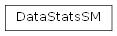

SegMeant.EngineSM.classification package
Submodules
SegMeant.EngineSM.classification.ClassificationSM module

- class SegMeant.EngineSM.classification.ClassificationSM.DataStatsSM(data: list, stats: dict)[source]
Bases :
object- data: list
- stats: dict
- def compare(self, vector2) -> dict:
return super().compare(self.stats, vector2.stats)
pass
- SegMeant.EngineSM.classification.ClassificationSM.compare(vector1: dict, vector2: dict) dict[source]
- SegMeant.EngineSM.classification.ClassificationSM.correlation(vec1: ndarray, vec2: ndarray) float[source]
- SegMeant.EngineSM.classification.ClassificationSM.cosVector(vec1: ndarray, vec2: ndarray) float[source]
Retourne le cosinus des deux vecteurs de taille égale générés depuis les deux textes étudiés. cos(v1, v2) = (v1 ∙ v2) / (∥v1∥ * ∥v2∥) = pdtScalaire(v1, v2) / pdtNormes(v1, v2)
- SegMeant.EngineSM.classification.ClassificationSM.dice(size_a: int, size_b: int, intersection: list) float[source]
Retourne l’indice DICE de similarité entre les deux listes : s(t1, t2) = 2(t1 ∩ t2) / (|t1| + |t2|) Avec t1 et t2 débarassés des doublons
- SegMeant.EngineSM.classification.ClassificationSM.dist_matrix(elements: list, method: str = None) dict[source]
- SegMeant.EngineSM.classification.ClassificationSM.extr_matrice(mat: ndarray) dict[source]
Extrait les extrema de la matrice (min et max) et renvoit leurs coordonnées sous la forme d’un dictionnaire.
Entrées : - mat : matrice de réels
Sorties : - dictionnaire à deux clés : “min” : (x, y), “max”: (x, y)
x et y sont les coordonnées de la valeur dans la matrice